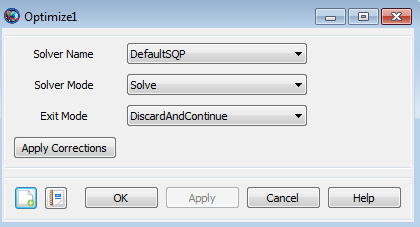

Optimize
Optimize — Solve for condition(s) by varying one or more parameters
Script Syntax
OptimizeSolverName [{[SolveMode=value], [ExitMode=value], [ShowProgressWindow=value] }]Vary command…script statement…NonlinearConstraint command…Minimize command…EndOptimize
Description
The Optimize command in GMAT allows you to solve optimization problems by using a solver object. Currently, you can choose from one of two available solvers, the FminconOptimizer solver object available to all GMAT users with access to the Matlab optimization toolbox and the VF13ad solver object plug-in that you must install yourself.
You use the Optimize and EndOptimize commands to define an Optimize sequence to determine, for example, the maneuver components required to raise orbit apogee to 42164 km while simultaneously minimizing the DeltaV required to do so. Optimize sequences in GMAT are applicable to a wide variety of problems and this is just one example. Let’s define the quantities that you don’t know precisely, but need to determine, as the Control Variables. We define the conditions that must be satisfied as the Constraints and we define the quantity to be minimized (e.g., DeltaV) as the Objective function. An Optimize sequence numerically solves a boundary value problem to determine the value of the Control Variables required to satisfy the Constraints while simultaneously minimizing the Objective function. As was the case for the Target/EndTarget command sequence, you define your control variables by using Vary commands. You define the constraints that must be satisfied by using the NonlinearConstraint command and you define the objective function to be minimized by using the Minimize command. The Optimize/EndOptimize sequence is an advanced command. The examples later in this section give a more detailed explanation.
See Also: Vary, NonlinearConstraint, Minimize, VF13ad
Options
| Option | Description | ||||||||||
|---|---|---|---|---|---|---|---|---|---|---|---|
| ApplyCorrections | The ApplyCorrections GUI button replaces the initial guess values specified in the Vary commands with those computed by the optimizer during a run. If the Optimize sequence converged, the converged values are applied. If the Optimize sequence did not converge, the last calculated values are applied. There is one situation where the action specified above, where the initial guess values specified in the Vary commands are replaced, does not occur. This happens when the initial guess value specified in the Vary command is given by a variable.
| ||||||||||
| ExitMode | Controls the initial guess values for
Optimize sequences nested in control flow. If
ExitMode is set to
| ||||||||||
| ShowProgressWindow | Flag to indicate if solver progress window should be displayed.
| ||||||||||
| SolveMode | Specifies how the optimization loop behaves during mission execution. When SolveMode is set to Solve, the optimization loop executes and attempts to solve the optimization problem. When SolveMode is set to RunInitialGuess, the Optimizer does not attempt to solve the optimization problem and the commands in the Optimize sequence execute using the initial guess values defined in the Vary commands.
| ||||||||||
| SolverName | Specifies the solver/optimizer object used in the Optimize sequence
|
GUI
The Optimize command allows you to use an optimization process to solve problems. To solve a given problem, you need to create a so-called Optimize sequence which we now define. When you add an Optimize command to the mission sequence, an EndOptimize command is automatically added as shown below.
 |
In the example above, the Optimize command sequence is defined as all of the commands between the Optimize1 and EndOptimize1 commands, inclusive. Although not shown above, an Optimize command sequence must contain a Vary command which is used to define the control variables that can be varied in order to help solve our problem. An Optimize command must also contain a Minimize command and/or one or more NonlinearConstraint commands. You use a Minimize command to define a cost function that you wish to minimize and you use the NonlinearConstraint command to define either an equality or inequality constraint that you want to be satisfied at the end of the optimization process.
Double click on the Optimize1 command above to open the Optimize command dialog box, shown below, which allows you to specify your choice of Solver (i.e., your choice of optimizer), Solver Mode, and Exit Mode. As described in the Remarks section, the Optimize command dialog box also allows you to apply corrections to your Optimize command sequence.
|  |
If you set ShowProgressWindow to true, then a dynamic display is shown during optimization that contains values of variables and constraints as shown below.
 |
Remarks
Content of an Optimize/EndOptimize Sequence
An Optimize/EndOptimize sequence must contain at least one Vary command and at least one of the following commands: NonlinearConstraint and Minimize. See the Vary, NonlinearConstraint, and Minimize command sections for details on the syntax for those commands. The first Vary command must occur before the first NonlinearConstraint or Minimize command. Each Optimize command field in the curly braces is optional. You can omit the entire list and the curly braces and the default values will be used for Optimize configuration fields such as SolveMode and ExitMode.
Relation to Target/EndTarget Command Sequence
There are some functional similarities between the Target/EndTarget and Optimize/EndOptimize command sequences. In both cases, we define Control Variables and Constraints. For both Target and Optimize sequences, we use the Vary command to define the Control Variables. For the Target sequence, we use the Achieve command to define the constraints whereas, for an Optimize sequence, we use the NonlinearConstraint command. The big difference between the Target and Optimize sequences is that the Optimize sequence allows for the minimization of an Objective function through the use of the Minimize command.
Command Interactions
| Vary command | Every Optimize sequence must contain at least one Vary command. Vary commands are used to define the control variables associated with an Optimize sequence. |
| NonlinearConstraint command | NonlinearConstraint commands are used to define the constraints associated with an Optimize sequence. Note that multiple NonlinearConstraint commands are allowed within an Optimize sequence. |
| Minimize command | A Minimize command is used within an Optimize sequence to define the Objective function that will be minimized. Note that an Optimize sequence is allowed to contain, at most, one Minimize command. (An Optimize sequence is not required to contain a Minimize command) |
Examples
Use an Optimize sequence with the fmincon solver object to find the point, (x, y), on the unit circle with the smallest y value. Note that the use of the FminconOptimizer solver assumes you have access to the Matlab optimization toolbox.
Create FminconOptimizer SQP1
SQP1.MaximumIterations = 50
Create Variable x y Circle
BeginMissionSequence
Optimize SQP1
Vary SQP1(x = 1)
Vary SQP1(y = 1)
Circle = x*x + y*y
NonlinearConstraint SQP1(Circle = 1)
Minimize SQP1(y)
EndOptimize Similar to the example given in the Target command Help, use an Optimize sequence to raise orbit apogee. In the Target command example, we had one control variable, the velocity component of an ImpulsiveBurn object, and the single constraint that the position vector magnitude at orbit apogee equals 42164. For this example, we keep this control variable and constraint but we now add a second control variable, the true anomaly of where the burn occurs. In addition, we ask the optimizer to minimize the Delta-V cost of the burn. As expected, the best (DV minimizing) orbit location to perform an apogee raising burn is near perigee (i.e., nearTA = 0). In this example, since the force model in use in not perfectly two body Keplerian, the optimal TA value obtained is close to but not exactly 0. Note that the use of the VF13ad solver object in this example assumes that you have installed this optional plug-in. Finally, report the convergence status to a file.
Create Spacecraft aSat
Create Propagator aPropagator
Create ImpulsiveBurn aBurn
Create VF13ad VF13ad1
VF13ad1.Tolerance = 1e-008
Create OrbitView EarthView
EarthView.Add = {Earth, aSat}
EarthView.ViewScaleFactor = 5
Create Variable ApogeeRadius DVCost
Create ReportFile aReport
BeginMissionSequence
Optimize VF13ad1
Vary VF13ad1(aSat.TA = 100, {MaxStep = 10})
Vary VF13ad1(aBurn.Element1 = 1, {MaxStep = 1})
Maneuver aBurn(aSat)
Propagate aPropagator(aSat) {aSat.Apoapsis}
GMAT ApogeeRadius = aSat.RMAG
NonlinearConstraint VF13ad1(ApogeeRadius=42164)
GMAT DVCost = aBurn.Element1
Minimize VF13ad1(DVCost)
EndOptimize
Report aReport VF13ad1.SolverStatus VF13ad1.SolverState